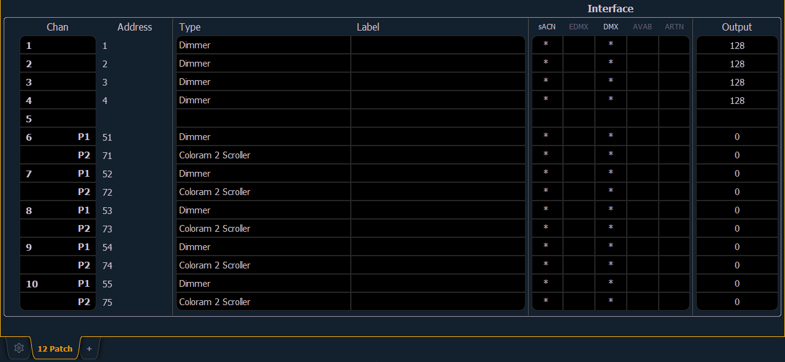

To begin patching your show, you must first open the patch display. To open the patch display, press [Patch] or press [Displays] and then {Patch}. [Tab] [1][2] can also be used to open Patch.
The patch display will open in the selected tab, and the CIA will display patch controls.
From within the patch display, you can open the Device List to use RDM to patch any RDM compatible devices. For more information about Device List, see Using Device List .
For patching fixtures, there are two different patch modes: patch by channel and patch by address. Element defaults to patch by channel mode. Pressing [Format] while in the Patch display will toggle the mode between patch by channel and patch by address.

The patch screen will display the following information if available:
Status flags will display on the far left of the patch display to advise you when a channel or address requires your attention.
A red “!” or yellow “?” will display when there is an error or warning from an RDM, CEM+, CEM3, or ACN device. See Errors and Warnings .